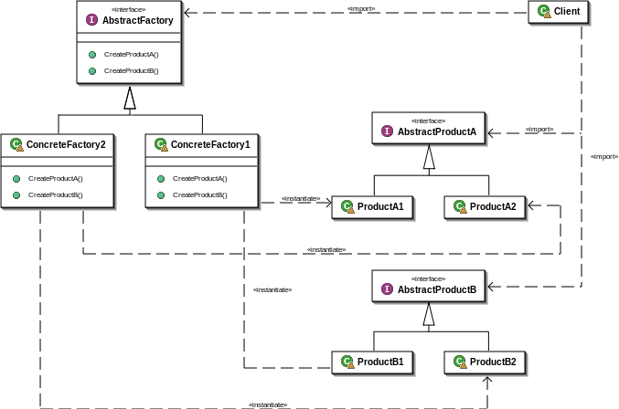

Design patterns
(part 1)
Lesson 11
Design pattern
Una soluzione progettuale generale ad un problema ricorrente.
- modello logico da applicare in diverse situazioni
- best practices formalizzata
- non è un pezzo di codice da copiare & incollare
- over 9000 (!!!) implementazioni
Design patterns
Object oriented
Mostrano relazioni e interazioni tra classi o oggetti, non specifiche classi o oggetti da utilizzare.
Implementando i principi SOLID.
Sono (spesso) meglio espressi da diagrammi anziché codice.
SOLID
Single responsibility
The object should be able to do the job completely.
SOLID
Open / Closed
Open for extension, closed for modification.
Polymorphism: an object that works in different ways, but implements a common interface and behavior
- l'interfaccia definisce l'oggetto
- l'implementazione interna è open
- l'interfaccia è closed
- cambiare l'interfaccia modifica il tipo di oggetto
SOLID
Open / Closed
interface MacchinaFotografica {
public function scatta();
}
class CanonEOS implements MacchinaFotografica {
public function scatta() {
// Do stuff..
}
}
SOLID
Liskov substitution
Derived classes must be substitutable for their base classes.
If A is a type of D, then A can replace instances of D.
Design by contract
SOLID
Liskov substitution
class Polaroid implements MacchinaFotografica {
public function scatta() {
if (count($this->carta) == 0) {
throw new Exception("Non c'è carta fotografica");
}
// Do stuff..
}
}
Viola il principio di sostituzione!
SOLID
Interface segregation
Many client-specific interfaces are better than one general-purpose interface.
SOLID
Dependency inversion
Depend upon Abstractions. Do not depend upon concretions.
Program to an interface, not an implementation.
SOLID
Dependency inversion
class Fotografo {
protected $macchinaFotografica;
public function prendiAttrezzatura(CanonEOS $macchinaFotografica) {
$this->macchinaFotografica = $macchinaFotografica;
}
public function faiFoto() {
$this->macchinaFotografica->scatta();
}
}
class NikonD50 implements MacchinaFotografica {
public function scatta() {
// Do stuff..
}
}
class Fotografo {
protected $macchinaFotografica;
public function prendiAttrezzatura(MacchinaFotografica $macchinaFotografica) {
$this->macchinaFotografica = $macchinaFotografica;
}
// ..
}
Design patterns
The gang of four

Design patterns
Classificazione
In origine 23 patterns, suddivisi in 3 categorie
- creazionali
- strutturali
- comportamentali
Wikipedia ne lista 36 + 16 sulla gestione della concorrenza
Creational patterns
- Factory method
- Abstract Factory
- Builder
- Prototype
- Singleton
Riguardano i meccanismi di creazione degli oggetti (instanze).
Separano un sistema da come i suoi oggetti sono creati.
Creare un oggetto è una grande responsabilità!
Creational patterns
Factory method
class FotografoSerio {
// ..
public function faiFoto() {
$mf = new CanonEOS();
$mf->scatta();
}
}
class FotografoHipster {
// ..
public function faiFoto() {
$mf = new Polaroid();
$mf->scatta();
}
}
Creational patterns
Factory method
- Problema: creazione di oggetti senza specificarne l'esatta classe.
- Soluzione: interfaccia per creare un oggetto, le sottoclassi decidono quale oggetto istanziare.
Creational patterns
Factory method
abstract class Fotografo {
public function faiFoto() {
$mf = $this->prendiMacchina();
$mf->scatta();
}
abstract public function prendiMacchina();
}
class FotografoHipster extends Fotografo {
public function prendiMacchina() {
return new Polaroid();
}
}
Creational patterns
Abstract Factory
- Problema: il sistema deve essere indipendente da come gli oggetti vengono creati.
- Problema: oggetti organizzati in famiglie devono essere utilizzati con oggetti della stessa famiglia.
- Soluzione: fornisce un'interfaccia per creare famiglie di oggetti connessi o dipendenti tra loro.
La scelta della Factory concreta solitamente è un parametro configurabile
Creational patterns
Abstract Factory

Creational patterns
Builder
class CanonEOS {
public function auto() {
$foto = new Foto();
}
public function manual() {
$foto = new Foto($width, $height, $exposure, $time, $iso);
}
public function istagram() {
$foto = new Foto($width, $height, $exposure, $time, $iso, [$filter1, $filter2, $filter3]);
}
}
Creational patterns
Builder
- Problema: creazione di oggetti complessi (configurabili) differenti tra loro.
- Soluzione: fornisce un'interfaccia per assemblare l'oggetto.
Creational patterns
Builder
class CanonEOS {
protected $fotoBuilder;
public function auto() {
$foto = $fotoBuilder->getResult();
}
public function istagram() {
$fotoBuilder->setWidth($width);
// ..
$fotoBuilder->addFilter($filter1);
$fotoBuilder->addFilter($filter2);
$fotoBuilder->addFilter($filter3);
$foto = $fotoBuilder->getResult();
}
}
Creational patterns
Prototype
- Problema: la classe degli oggetti da creare sono definiti a run-time.
- Soluzione: fornisce un gestore di prototipi per creare nuovi oggetti clonando un oggetto iniziale.
Creational patterns
Prototype
Creational patterns
Singleton
- Problema: devo avere una e una sola copia di un oggetto.
- Soluzione: se proprio devi, meh..
class MySingleton {
private static $instance;
private function __construct() {}
private function __clone() {}
public static function getInstance() {
if (!(self::$instance instanceof MySingleton)) {
self::$instance = new MySingleton();
}
return self::$instance;
}
}
Rompe SOLID, dà fastidio nei test.
/